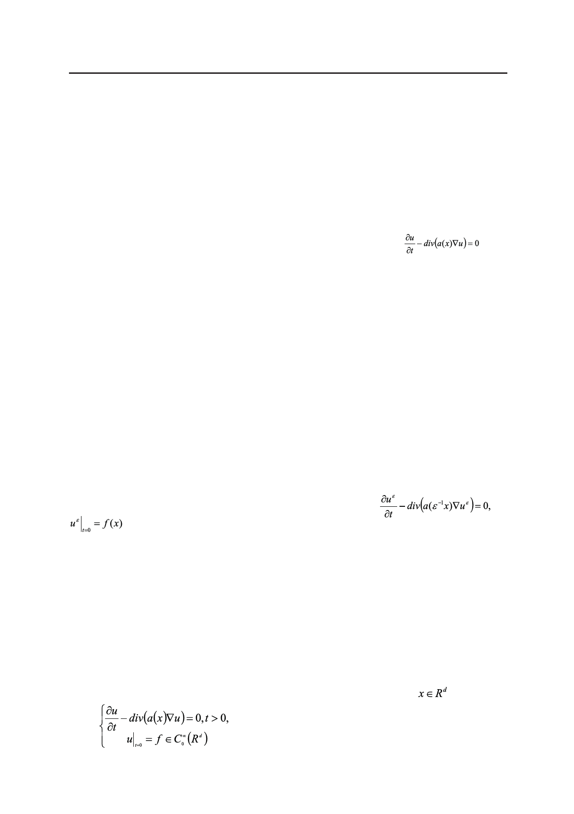

С.Е. Пастухова, О.А. Евсеева
LARGE-TIME ASYMPTOTIC OF THE SOLUTION
TO THE DIFFUSION EQUATION AND ITS APPLICATION
TO HOMOGENIZATION ESTIMATES
S.E. Pastukhova@,
O.A. Evseeva
Moscow Technological University, Moscow 119454, Russia
@Corresponding author e-mail: pas-se@yandex.ru
The Cauchy problem for a linear second order parabolic equation
with
1-periodic measurable coefficients is considered Rd, d ≥ 2. The problem models diffusion in a
nonhomogeneous periodic medium. The appropriate diffusion operator A is self-adjoint in L2
(Rd). The large-time behaviour of the solution of the Cauchy problem is of main interest for
us. To this end, we study first of all the fundamental solution, in other words, the kernel of the
exponential exp(-tA), more exactly, its large-time asymptotics. Its approximation is found with
integral error estimate of order O(t-1), as time t tends to +∞.
To construct this approximation and carry out its justification we use
(i) the known fundamental solution to the homogenized diffusion equation (having
constant coefficients);
(ii) solutions of so-called auxiliary problems on a periodicity cell, which are formulated
in a recurrent way. We substantiate this approximation under additional regularity condition on
the diffusion matrix a(x): it should be Lipschitz continuous.
The results of asymptotic behaviour of the fundamental solution are applied to obtain an
approximation of order O(t-1) for the exponential exp(-tA) in operator Lp-norms, on the section
t=const as t tends to +∞.
There are also some corollaries of these results to operator estimates for a similar exponential
exp(-tAε), Aε being a diffusion operator with quickly oscillating ε-periodic coefficients, as tends
to zero. This exponential corresponds to the Cauchy problem:
modelling diffusion in a strongly nonhomogeneous ε-periodic medium. Here ε is a
small parameter. We construct approximations of order O(ε2) for the exponential exp(-tAε) in
operator Lp – norm on the section t=const for arbitrary finite fixed t (say, t=1). This approximation
is a sum of the exponential exp(-tA0) with a homogenized operator A0 and some correcting operator.
The results have a broad range of applications, e.g., for computing heat flow in a periodic
composite medium with a small periodicity cell or for bacterial density estimation in a periodic
culture medium.
Keywords: diffusion equation, effective diffusion, homogenized operator, fundamental
solution, cell problems, large-time asymptotic, homogenization estimates in Lebesgue norms.
Введение
Внастоящей работе изучается задача Коши для функции u = u(x,t),
,t≥0,
(1)
Российский технологический журнал 2017 Том 5 № 5
61